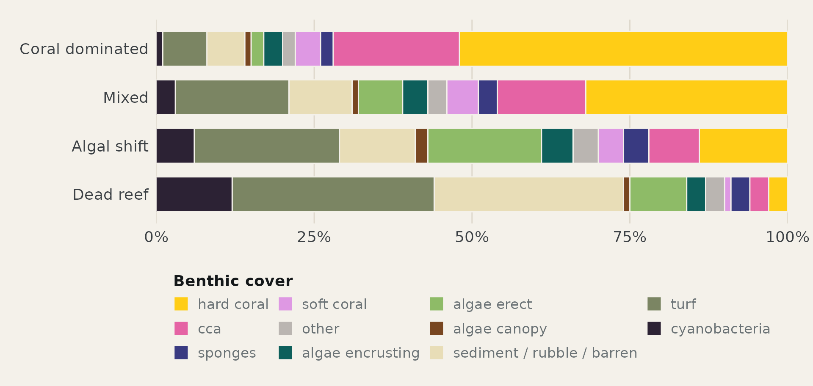
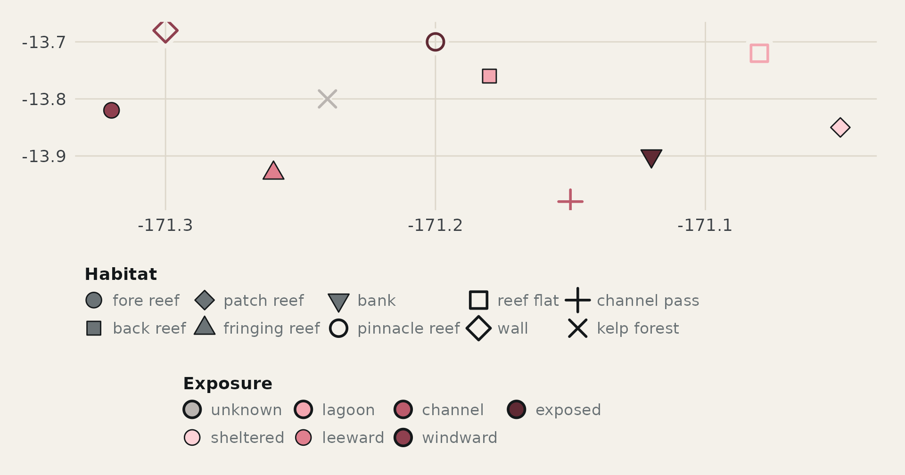
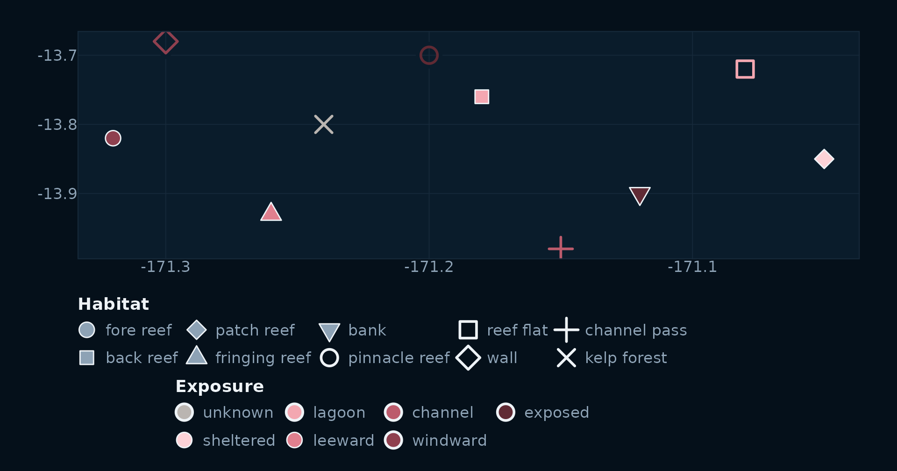

Coordinated palettes for scientific figures, maps and editorial graphics.
Colours are chosen to be ecologically true and visually right, then measured: every pair is checked with CIEDE2000 under normal vision, the three dichromacies and greyscale, on both the light chart paper and the dark map water. Separation is spent where it is needed. The classes that carry most figures get the widest spacing, and the palettes are held apart from one another so they can share a page, or a map.
Every palette lives in ps_colors(), and every ggplot2
scale in this package pulls from it:
ps_colors()
#> [1] "depth_strata" "trophic_group" "benthic_cover" "exposure"
#> [5] "habitat"
ps_colors("depth_strata")
#> supershallow shallow deep superdeep
#> "#96D8DE" "#52B2CD" "#007EB1" "#015871"Names match the vocabulary in allowed_vocab, so a factor
built from validated data lands on the right colour without a lookup.
scale_fill_ps() and scale_color_ps() take a
palette name; scale_shape_ps() does the same for the
habitat shapes.
Palettes
Use the controls to see every palette on this page as a colour-blind reader or a greyscale print would, and on either canvas.
1. Depth strata
Four blues, dark with depth. The two middle strata carry most figures and get the widest spacing.
2. Fish trophic group
Ordered from apex to base so a stacked bar reads top down. The reds are held for sharks and top predators, the classes fishing removes first, so the loss reads as a loss of warmth.
3. Benthic cover
Eleven classes, the most a palette here carries. Hard coral and turf are the two a reader compares most, so they sit at opposite ends in hue and lightness. The three algal groups share a green family; the calcifiers, CCA and soft coral, share a pink one.
4. Exposure
A single sequential ramp, sheltered to exposed, plus a neutral grey for sites whose exposure is not recorded. On a site map exposure fills the marker.
5. Habitat
Five slots, named by default for the zones sampled on most trips. A
trip that samples other habitats reassigns the same five colours in
order with ps_habitat_colors(), so a figure always draws on
the same well-separated set.
ps_habitat_colors(c("fore_reef", "pinnacle_reef", "wall"))
#> fore_reef pinnacle_reef wall
#> "#005F87" "#DCA04F" "#A5DBE0"Habitat also has a shape palette, ps_shapes("habitat"),
and it covers every level of the vocabulary in three tiers by how often
a habitat is sampled. The filled and open tiers share the same five
silhouettes so a legend reads as one family. On a map, exposure fills
the marker and habitat sets its shape: filled shapes take the exposure
as their fill with the ink as outline, and open and line shapes take it
as their stroke over a halo in the canvas colour.
Distinctiveness
Two colours are distinct when a reader can tell them apart without a legend beside them. CIEDE2000, written ΔE₀₀, is the standard measure of that perceived difference. A value under 10 is a near match; 20 separates most readers; above 30 no one confuses the pair. The matrix follows the vision control above, and the report beneath it names the closest pair, the closest pair among the classes that carry most figures, and any colour that comes close to one in another palette.
In R
The scales take a palette name and match levels by name, so the data decides which colours appear and the palette decides their order.
benthic <- bind_rows(lapply(states$benthic_cover, \(s) {
tibble(state = s$name, class = names(ps_colors("benthic_cover")), share = s$share)
})) |>
mutate(state = factor(state, levels = rev(unique(state))),
class = factor(class, levels = rev(names(ps_colors("benthic_cover")))))
ggplot(benthic, aes(x = share, y = state, fill = class)) +
geom_col(position = position_fill(reverse = TRUE), width = 0.72,
colour = ink[["canvas"]], linewidth = 0.4) +
scale_fill_ps("benthic_cover", labels = tidy) +
scale_x_continuous(labels = \(x) paste0(x * 100, "%"), expand = c(0, 0)) +
labs(x = NULL, y = NULL, fill = "Benthic cover") +
theme_ps() +
theme(panel.grid.major.y = element_blank(), legend.position = "bottom")
A site map uses three scales at once. Exposure is mapped to both
fill and colour so it reaches the filled and
the open shapes; the colour legend is dropped and the fill legend is
drawn with filled circles so there is one exposure key. A halo layer
under the open shapes lifts them off the canvas.
sites <- tibble(
lon = c(-171.32, -171.18, -171.05, -171.26, -171.12, -171.20,
-171.30, -171.08, -171.15, -171.24),
lat = c( -13.82, -13.76, -13.85, -13.93, -13.90, -13.70,
-13.68, -13.72, -13.98, -13.80),
habitat = c("fore_reef", "back_reef", "patch_reef", "fringing_reef", "bank",
"pinnacle_reef", "wall", "reef_flat", "channel_pass", "kelp_forest"),
exposure = c("windward", "lagoon", "sheltered", "leeward", "exposed",
"exposed", "windward", "lagoon", "channel", "unknown")
) |>
mutate(filled = ps_shapes("habitat")[habitat] >= 21)
site_markers <- function(sites, theme, ink) {
ggplot(sites, aes(lon, lat, shape = habitat)) +
geom_point(data = filter(sites, !filled), size = 4.6, stroke = 2.6,
colour = ink[["panel"]], show.legend = FALSE) +
geom_point(data = filter(sites, !filled), aes(colour = exposure, fill = exposure),
size = 4.2, stroke = 1.2) +
geom_point(data = filter(sites, filled), aes(fill = exposure),
size = 4.2, stroke = 0.6, colour = ink[["title"]]) +
scale_shape_ps("habitat", drop = TRUE, labels = tidy) +
scale_fill_ps("exposure", drop = TRUE, name = "Exposure") +
scale_color_ps("exposure", drop = TRUE, guide = "none") +
guides(shape = guide_legend(override.aes = list(fill = ink[["muted"]],
colour = ink[["title"]])),
fill = guide_legend(override.aes = list(shape = 21,
colour = ink[["title"]]))) +
labs(x = NULL, y = NULL, shape = "Habitat") +
theme +
theme(legend.box = "vertical", legend.justification = "left")
}
site_markers(sites, theme_ps(), ink)
site_markers(sites, theme_ps_map(), water)
The palettes as R code
For a script that cannot take the package as a dependency.
depth_strata = c("supershallow" = "#96D8DE",
"shallow" = "#52B2CD",
"deep" = "#007EB1",
"superdeep" = "#015871")
trophic_group = c("shark" = "#75161D",
"top_predator" = "#AC2D00",
"lower_carnivore" = "#B96310",
"herbivore | detritivore" = "#40AE82",
"planktivore" = "#C1C2FA")
benthic_cover = c("hard_coral" = "#FFCD16",
"cca" = "#E563A4",
"sponges" = "#393A81",
"soft_coral" = "#DE98E3",
"other" = "#BAB5B1",
"algae_encrusting" = "#0D5F5B",
"algae_erect" = "#8EBB67",
"algae_canopy" = "#784620",
"sediment | rubble | barren" = "#E8DDB7",
"turf" = "#7B8563",
"cyanobacteria" = "#2C2234")
exposure = c("unknown" = "#BAB5B1",
"sheltered" = "#FDD2D7",
"lagoon" = "#F3A7B1",
"leeward" = "#E07F8E",
"channel" = "#BC5B6C",
"windward" = "#8F404F",
"exposed" = "#602A34")
habitat = c("fore_reef" = "#005F87",
"back_reef" = "#DCA04F",
"patch_reef" = "#A5DBE0",
"fringing_reef" = "#6F3F1B",
"bank" = "#8E81CE")
habitat_shape = c("fore_reef" = 21,
"back_reef" = 22,
"patch_reef" = 23,
"fringing_reef" = 24,
"bank" = 25,
"pinnacle_reef" = 1,
"reef_flat" = 0,
"wall" = 5,
"reef_pavement" = 2,
"rocky_reef" = 6,
"channel_pass" = 3,
"kelp_forest" = 4,
"seagrass" = 8)